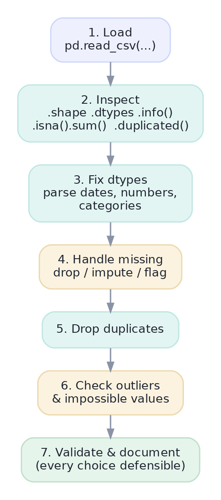
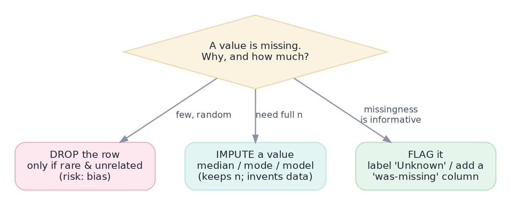

Cleaning Messy Data
Missing values, types, duplicates, and the 80% of the job nobody shows you.
Here's the part nobody puts on a highlight reel: most of data science is cleaning data. Real datasets arrive with missing values, text where numbers should be, duplicates, and impossible entries. Skip this step and every downstream number is quietly wrong — a polished model trained on garbage. Cleaning well, and being able to defend every choice, is what separates a trustworthy analyst from a dangerous one.
MethodThe cleaning workflow
Cleaning isn't random fixing; it's a repeatable sequence. Inspect first — you can't fix what you haven't seen — then work through types, missingness, duplicates, and outliers, documenting each decision.

Concept · the central decisionMissing data
Pandas marks missing values as NaN ('not a number') and you detect them with df.isna().sum(). The real question is never how to fill a gap but whether to — and the honest answer depends on why the value is missing and how much is gone. Three defensible moves, from the capstone:

Two missing-data traps. First, don't blanket-drop rows with any NaN (dropna() on a wide table can delete most of your data and bias the rest). Second, don't impute before splitting for modeling — filling with a mean computed over the whole dataset leaks information from the test set into training (a Track 7 theme). Match the remedy to the cause, and do it at the right time.
Concept · the usual suspectsTypes, duplicates, outliers, and strings
The rest of cleaning is a checklist of common messes:
- Wrong types: numbers stored as text, dates as strings. Fix with
pd.to_numeric(...)andpd.to_datetime(...). - Duplicates:
df.drop_duplicates()— but clean the keys first, so ' Austin' and 'austin ' are recognized as the same. - Outliers / impossible values: negative prices, a 200-year-old customer. Investigate, then drop true errors or cap (
clip) extreme-but-real values. - Messy strings: stray whitespace and inconsistent case, fixed in one vectorized pass with
.str.strip()and.str.title()/.str.lower().
Worked exampleClean a messy table
Here's a deliberately dirty little dataset — inconsistent city casing, numbers as text, two date formats, a duplicate, and missing values. Watch it become trustworthy, step by step.
import pandas as pd
import numpy as np
raw = pd.DataFrame({
"city": [" Austin", "austin ", "Denver", None, "Reno"],
"spend": ["29.0", "29.0", "99", "0", None], # numbers stored as text
"signup": ["2025-01-05", "2025-01-05", "2025/02/11", "2025-03-01", "2025-03-02"],
})
print("missing per column:\n", raw.isna().sum().to_string(), "\n")
df = raw.copy()
df["city"] = df["city"].str.strip().str.title() # tidy strings first
df["spend"] = pd.to_numeric(df["spend"]) # text -> float
df["signup"] = pd.to_datetime(df["signup"], format="mixed") # text -> datetime
df = df.drop_duplicates() # now ' Austin'/'austin ' match
df["city"] = df["city"].fillna("Unknown") # FLAG missing city
df["spend"] = df["spend"].fillna(df["spend"].median()) # IMPUTE missing spend
print(df.to_string(index=False))
print("\nfinal dtypes:", dict(df.dtypes.astype(str)))missing per column:
city 1
spend 1
signup 0
city spend signup
Austin 29.0 2025-01-05
Denver 99.0 2025-02-11
Unknown 0.0 2025-03-01
Reno 29.0 2025-03-02
final dtypes: {'city': 'object', 'spend': 'float64', 'signup': 'datetime64[ns]'}Five lines turned a treacherous table into a trustworthy one: consistent cities, real numbers and dates, the duplicate gone, and the two gaps handled differently and deliberately — the city flagged as Unknown, the spend imputed with the median. If a stakeholder asks why, you have an answer for each. That is gold-standard cleaning.
★ Key points to remember
- Inspect before you fix:
.info(),.dtypes,.isna().sum(),.duplicated().sum(). - Missing data: drop (rare & unrelated), impute (keep n), or flag (missingness is informative) — never reflexively
dropna()everything. - Fix types with
pd.to_numeric/pd.to_datetime; a numeric column read as text is the #1 real-world bug. - Clean keys before
drop_duplicates; use.straccessors to standardize text in one pass. - Investigate outliers and impossible values — document every cleaning decision so it's defensible and reproducible.
df.isna().sum() shows the income column is 40% missing. What's the most reckless next step?pd.read_csv, df["price"].mean() raises a type error and df.dtypes shows price as object. What's the cause and fix?drop_duplicates()?◆ Practice▸
rating column should be 1–5, but you find values of 0 and 99. Walk through how you'd decide what to do.Show solution & reasoning
First investigate: are 0 and 99 sentinel codes (e.g., 0 = 'no rating given', 99 = 'N/A') or genuine entry errors? Check counts and context. If they're sentinels for missing, convert them to NaN and then handle as missing (flag or impute). If they're errors with no recoverable truth, drop or null them. Don't silently leave them — a mean rating of 7.3 from stray 99s would mislead everyone. Document the decision.
Show solution & reasoning
It causes data leakage: the mean uses information from rows that will become your test set, so the test data secretly influences the training features. Your model then looks better in validation than it will in production. The fix (Track 7) is to compute imputation values on the training split only and apply them to validation/test — typically inside a pipeline so it happens automatically per fold.
◎ Deep dive: NaN propagation, the real cost of imputation, and the categorical dtype▸
NaN is contagious — usually helpfully. Arithmetic with NaN yields NaN (5 + NaN = NaN), which stops corrupt values from masquerading as real ones. But aggregations are smart: df["x"].mean() skips NaNs by default rather than returning NaN. Know which behavior you're getting — sometimes you want skipna=False to catch that data is missing rather than silently averaging a subset.
Imputation has hidden costs. Filling missing values with the mean shrinks the variable's variance and weakens correlations — you've invented certainty that isn't there. Median is more robust for skewed data; mode suits categories; model-based imputation (predicting the missing value from other columns) is most faithful but most complex. Whatever you choose, consider adding a 'was-missing' indicator column so the model can learn that missingness itself meant something.
The categorical dtype. Columns with few repeated values (region, plan, status) can be cast to pandas' category dtype. It stores each label once and references it by code — saving memory on large data and signaling intent (this is a label, not free text). It also makes value-counts and grouping faster, a small habit that pays off at scale.
"How do you handle missing data?" is asked constantly. Don't say 'I drop it.' Say: it depends on why it's missing and how much — then lay out drop / impute / flag with a one-line rationale for each, and mention the leakage risk of imputing before a train/test split. That nuance is exactly what distinguishes a careful analyst.